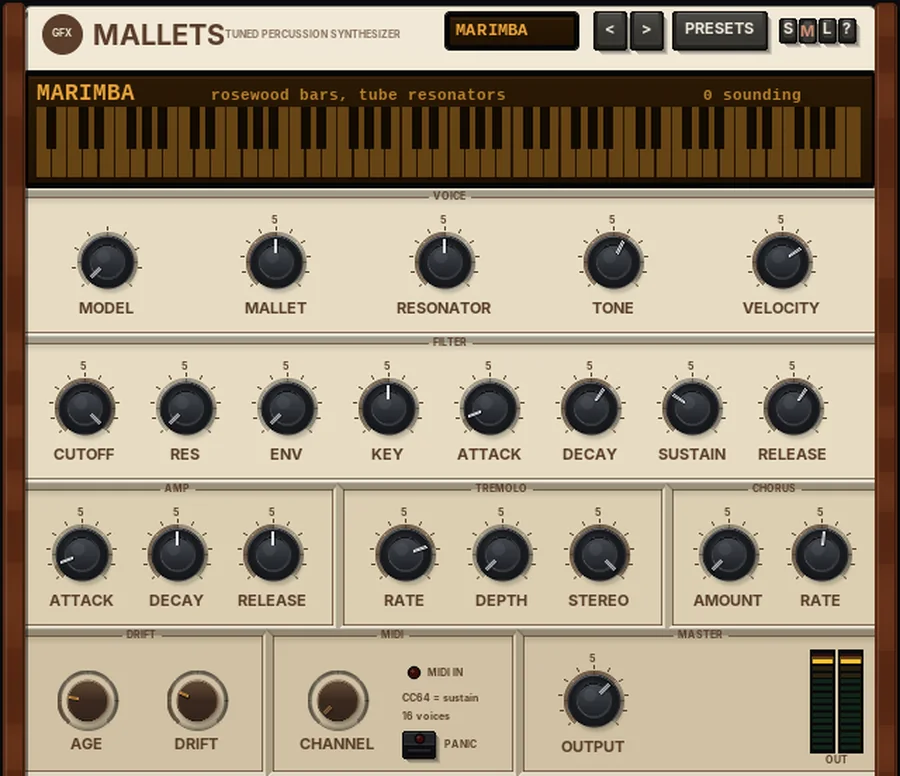

G Mallets
A tuned-percussion synth: marimba, vibes, glock, xylophone, celesta, kalimba, steel pan, tubular bells and an electric grand.

Overview
G Mallets is a 16-voice tuned-percussion instrument. Each note is built from a handful of ringing partials tuned like the real thing - a marimba bar, a glockenspiel bar, a kalimba tine, a chime - plus a short mallet or pluck transient at the start. Lower notes ring longer than high ones, as on the real instruments.
Nine models are on board. MALLET sets how hard the strike is, RESONATOR how full the body is, and TONE how bright the whole instrument sounds. After that there is a low-pass filter with its own envelope, an amp section, a vibes-style tremolo and a chorus.
It is an instrument: it has no audio input and plays from MIDI. It responds to the sustain pedal (CC64) and all-notes-off (CC120 / CC123), and passes its MIDI on down the chain.
Reach for it for
- Marimba, vibes and glockenspiel parts
- Kalimba, steel pan and music-box style melodies
- Tubular-bell hits and long chime tails
- An 80s-style electric grand with chorus
- Soft mallet pads (filter envelope and slow attack)
Loading and playing it
- Insert G Mallets on a track (it is an instrument, so it needs no audio on the track).
- Arm the track for recording and set its input to your MIDI keyboard (or draw MIDI notes into an item on the track).
- Pick a sound with MODEL or from PRESETS. The MIDI IN light glows while notes play, and the keyboard in the display lights up with each sounding note.
- Play with feeling: VELOCITY sets how much your playing dynamics matter, and harder notes also strike harder (brighter).
Controls
Display
Shows the model's name and a short description, how many notes are sounding (and SUSTAIN while the pedal is down), and an 88-key keyboard that glows with each note as it rings.
VOICE
- MODEL
- The instrument: MARIMBA (rosewood bars, tube resonators), VIBES (aluminium bars, long ring), GLOCK (steel bars, bright and bell-like), XYLOPHONE (rosewood bars, short and dry), CELESTA (struck steel plates, music-box), KALIMBA (plucked steel tines), STEEL PAN (tuned steel drum), BELLS (tubular chimes, very long ring) and E.GRAND (an electric grand with stretched strings and a bright pickup).
- MALLET
- How hard the mallet is, 0 to 100%. Harder mallets bring out the upper partials and a brighter, shorter, clickier attack; softer ones are rounder.
- RESONATOR
- The tube or body, 0 to 100%: a fuller, longer-ringing fundamental as you turn it up.
- TONE
- The overall brightness, 0 to 100% - a gentle low-pass on the whole instrument.
- VELOCITY
- How much your playing dynamics change the level, 0 to 100% (70% by default). At 0 every note plays at the same level. It also sets how much velocity moves the filter envelope.
FILTER
A 12 dB per octave low-pass filter on each voice, with its own envelope. With CUTOFF fully open (OPEN) and ENV and RES at 0 it is out of the way.
- CUTOFF
- 100 Hz to 18 kHz; fully right reads OPEN.
- RES
- Resonance, 0 to 100%.
- ENV
- How far the envelope opens the filter, 0 to 100% (up to six octaves above CUTOFF).
- KEY
- Keyboard tracking, 0 to 100% (50% by default): how much the cutoff follows the notes you play.
- ATTACK / DECAY / SUSTAIN / RELEASE
- The filter envelope: attack 0.5 ms to 2 s, decay 5 ms to 10 s, sustain 0 to 100%, release 5 ms to 5 s.
AMP
- ATTACK
- How fast each note fades in, 0.5 ms to 2 s. Leave it short for a struck sound; raise it for soft, bowed or pad-like mallets.
- DECAY
- How long the notes ring, 25 to 400% of the model's natural length.
- RELEASE
- Damping: how fast a note dies when you let go of the key, 25 to 400% of the model's natural damping. Notes ring on while the key or the sustain pedal is held.
The filter envelope's DECAY, SUSTAIN and RELEASE also shape the level of each note while the key is held and after it is released, together with the AMP controls.
TREMOLO
- RATE
- 0.5 to 10 Hz.
- DEPTH
- 0 to 100%. At 0 the tremolo is off.
- STEREO
- From MOTOR (fully left: a plain level tremolo, like the vibes' rotating fans) to PAN (fully right: the sound sweeps left and right). In between it blends the two.
CHORUS
- AMOUNT
- How much stereo chorus is added, 0 to 100%.
- RATE
- The chorus speed, 0.1 to 5 Hz.
DRIFT
- AGE
- Detunes each key slightly by its own fixed amount (20% by default), like an old instrument whose bars or tines have gone a little out of tune.
- DRIFT
- See Drift below.
MIDI
- CHANNEL
- OMNI (all channels) or 1 to 16.
- MIDI IN
- Lights while notes arrive or are sounding.
- PANIC
- Stops every sounding note.
MASTER
- OUTPUT
- The final level, -24 to +12 dB.
- OUT meters
- Output level, left and right. Click them to reset the peak hold.
The header
- LCD
- Shows the current model name.
- < / >
- Step through the presets.
- PRESETS
- Opens the list of factory presets. Choosing one sets the voice, filter, amp, tremolo and chorus; AGE, DRIFT, the MIDI channel, OUTPUT and the output and stereo settings are left as they are. The last entry resets everything to the defaults.
- S / M / L
- Panel size: small, medium or large. The panel also scales to fit the plugin window.
- ?
- Opens a pop-up with the design credit, the GFX website address and the address of this manual. Click anywhere to close it.
Output stage and stereo
These settings have no knobs on the panel itself; reach them through REAPER's parameter list for the plugin (or automation lanes). Their names there are given in brackets.
- MONO (Mono below)
- Removes the stereo spread below this frequency (20 to 500 Hz; fully left is OFF), so the low notes stay solid in the centre.
- WIDTH (Stereo width)
- Widens the stereo image above the MONO frequency, up to twice the side signal.
- SAT (Band sat)
- Band saturation on the way out: only the lows and highs are saturated (the mids stay clean), with a soft curve that loosens as the level rises.
- BIAS
- Shapes the saturation: more bias adds more even (2nd) harmonics, for a warmer, rounder colour.
- LO BAND / HI BAND (Sat low band / Sat high band)
- Where the low and high saturation bands start (40 - 400 Hz and 2 - 16 kHz).
- CEILING (Ceiling)
- With CLIP: the level the peaks are softly clipped at (-6 to 0 dB). With LIMIT: the threshold of a brickwall limiter that holds the peaks at -0.3 dBFS - pulling it down limits harder and makes the output louder.
- Output stage
- Off, Clip or Limit: nothing, a soft clipper (no latency, the default), or a lookahead limiter (3 ms latency, compensated by REAPER).
Drift
DRIFT (0 - 100%, 25% by default) adds the life of a real instrument: the overall tuning wanders slowly, every note lands slightly differently in tune, and the TONE and filter cutoff breathe a little. At 0 it is perfectly steady.
Presets
- Soft Marimba
- Marimba with a soft mallet and a fuller resonator.
- Hard Marimba
- Marimba with a hard mallet, brighter tone and more velocity response.
- Vibes Motor
- Vibes with a 4.5 Hz level tremolo (the fan motor).
- Vibes Dry
- Vibes without tremolo, with a touch of chorus.
- Glockenspiel
- Glock with a slightly hard mallet.
- Xylophone
- Xylophone with a hard mallet and bright tone.
- Celesta Box
- Celesta with chorus.
- Kalimba
- Kalimba with a fuller body.
- Steel Pan
- Steel pan with a light 6 Hz tremolo and chorus.
- Tubular Bells
- Tubular bells, plain.
- Mallet Pad
- Vibes with a slow attack, a closed filter opened by its envelope, longer ring, tremolo and chorus.
- Grand 80s Chorus
- The electric grand with plenty of chorus.
- Grand Dry
- The electric grand without chorus, ringing a little longer.
- Reset all to defaults
- Every control back to its starting value, including AGE, DRIFT, the MIDI channel, OUTPUT and the output stage.
Tips
- For realistic vibes, use Vibes Motor and play with the sustain pedal: the bars ring on while the motor tremolo pulses.
- Raise Mono below (in the parameter list) to 100-150 Hz when low marimba or bell notes make the stereo image wobble.
- Turn AGE up for an old, slightly out-of-tune instrument; turn it to 0 for a perfectly tuned one.
- DECAY above 100% turns short instruments such as the xylophone into ringing, sustained tones; below 100% makes them drier.
- For a soft mallet pad, raise AMP ATTACK and pull CUTOFF down with some ENV, as in the Mallet Pad preset.
File: gfx-g-mallets.jsfx